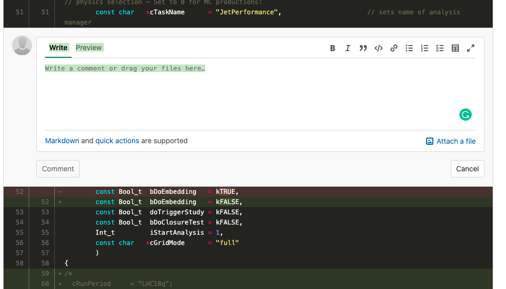

gitとは
Gitは、ソフトウェア開発において広く使用されている分散型バージョン管理システムです。 Gitを使用することで、コードの変更履歴を追跡し、複数の開発者が同時に作業する際の競合を管理することができます。 Gitは、コードのバージョン管理だけでなく、ドキュメントや設定ファイルなど、あらゆる種類のファイルの変更履歴を管理するためにも使用されます。 セクション名を大きく書いたものの、書いた本人も語れるほどgitを分かっていませんが、 gitを全く知らなかった方に最低限知っておいて欲しい内容を記します。 （詳しくは以下の参考ページを見てください） git自体は企業等でも当たり前のように使われている一般的なアプリケーションです。 大きなシステムを複数人でスムーズに管理するための分散型バージョン管理システムです。 そのため我々のような大きなコラボレーションのシステム開発に向いています。 個人的に使う際にも”バージョン管理”というのが非常に便利で、 差分を記録していくため、定期的にpushしておけば問題が起きた時にその前に簡単に戻れ、何が問題だったのかも明確にわかります。 以下の画像のように書き足した部分は緑色、削った部分は赤色になります。 また各箇所にコメントを入れることもできます。この機能は複数人で編集する際には便利になるでしょう。
またある種のバックアップにもなるので開発コードは定期的に自分のレポジトリに挙げておくと後々便利でしょう。 ただ気をつけて欲しいのが、差分が全て記録されていくため編集中のpdf(もう書き換えないpdfはOK, むしろReadMe等がpdfとして保管されているのは最高です)や、 とても重いファイル(root file等)はgitに上げない方がいいでしょう。 またいずれにせよroot fileなどは上げない方がいいと思いますが、 どうして重いものを上げる必要がある際にはgit-lfs (公式: Git Large File Storage)というものを使うといいでしょう。
便利なリンク集
- 基礎を体系的に学ぶ サル先生のGit入門 : 基本的なことはここで全て学べます。
- コミット、ブランチ、マージ、リベース こわくないGit : すごくわかりやすくスライドベースでコミット、ブランチ、マージ、リベースについて説明してくれています。
- Gitのコマンドリスト [1], [2] : gitのコマンドを一覧で見ることができます。よく使うコマンドは覚えておくと便利です。
- Gitでやらかした時に使える19個の奥義